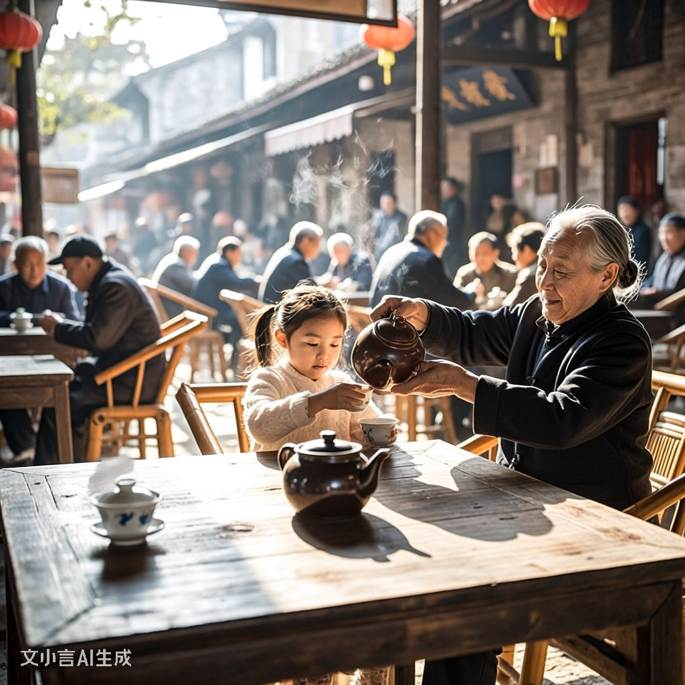
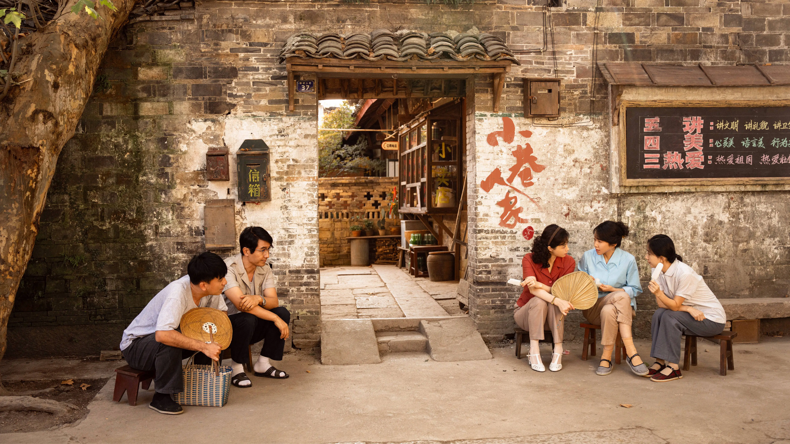
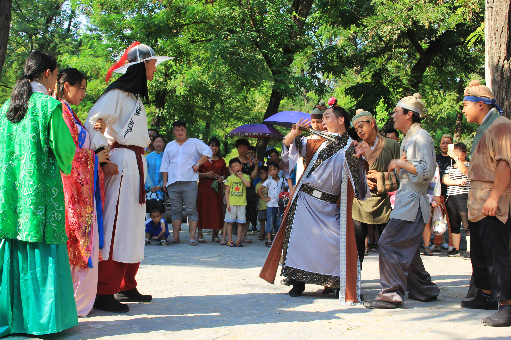
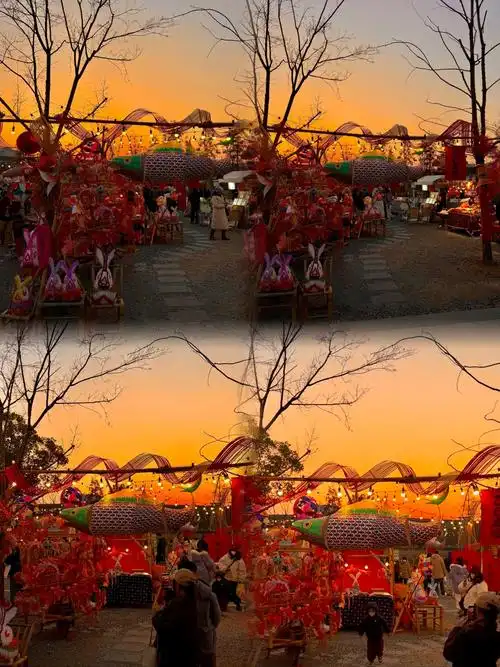
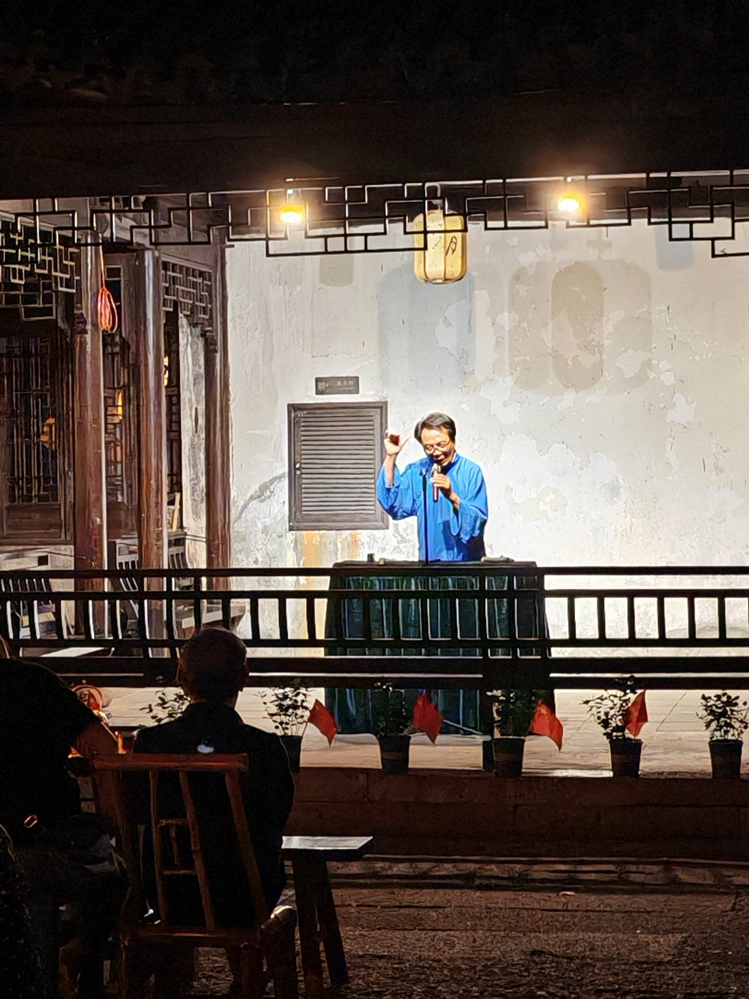
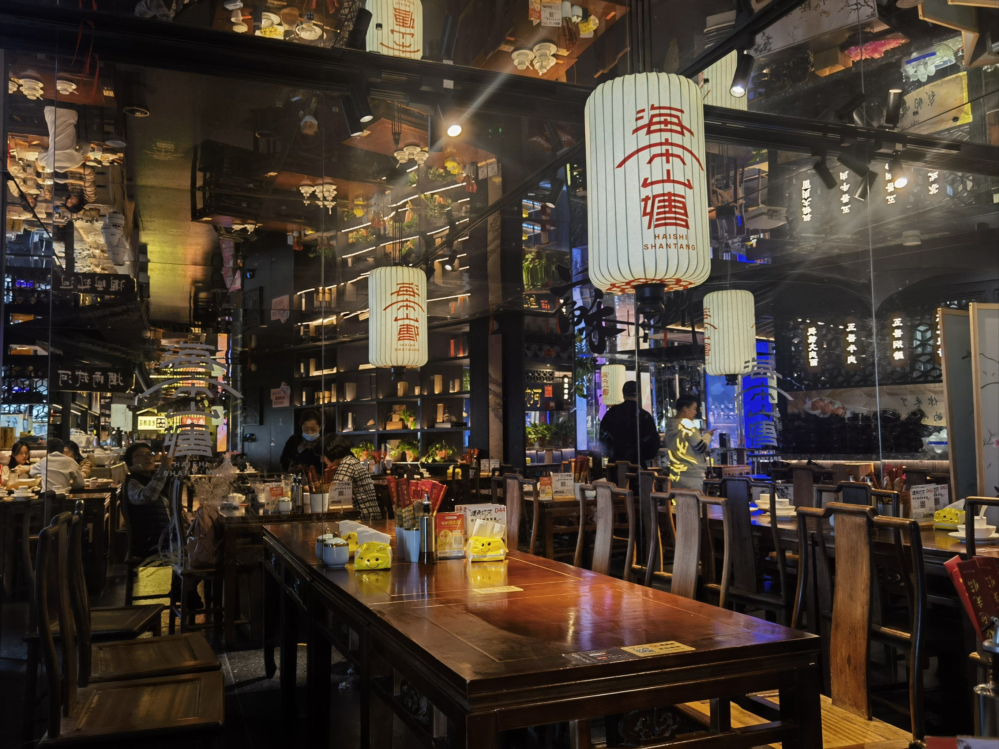

一脚踏三县 · 一壶讲半日

故事的源起
走马故事诞生于明清时期，当时走马镇是成渝古驿道上的重要驿站，素有"一脚踏三县"之称。南来北往的商客、挑夫、文人墨客在此歇脚。
大家聚在茶馆里摆龙门阵，交流各地的奇闻轶事。久而久之，这些由"赶马"人群口头创作和传承的故事，便形成了独具特色的"走马故事"。
它包罗万象，有神话传说、风物典故、动植物趣事，还有反映市井生活的生活故事，文化底蕴非常深厚。


走马故事诞生于明清时期，当时走马镇是成渝古驿道上的重要驿站，素有"一脚踏三县"之称。南来北往的商客、挑夫、文人墨客在此歇脚。
大家聚在茶馆里摆龙门阵，交流各地的奇闻轶事。久而久之，这些由"赶马"人群口头创作和传承的故事，便形成了独具特色的"走马故事"。
它包罗万象，有神话传说、风物典故、动植物趣事，还有反映市井生活的生活故事，文化底蕴非常深厚。
Story Categories
关于古驿、关武庙、走马山的种种传说，承载着古人对天地与神灵的想象。
每一座桥、每一棵古树、每一块碑石的来历，都藏在故事里。
狡黠的狐、知恩的鹊、化形的梅，赋予自然万物以性情。

邻里之间的纠葛、嬉笑、温情，一壶酒就能讲到天明。

古道之上，行侠仗义的故事在驿站间流传，亦真亦幻。

从年节到红白事，每一种习俗背后都有一个值得讲述的故事。
Inheritance Lineage
古驿茶馆兴起，"摆龙门阵"成为最受欢迎的民间娱乐形式，故事开始口耳相传。
说书艺人活跃，部分故事被文人记录，形成早期文字版本，但仍以口传为主。
地方文化部门开展抢救性整理，对走马讲述家进行系统采访录音。
"走马民间故事"被列入首批国家级非物质文化遗产名录。
故事走进校园、舞台与文创，亦走入沉浸式剧本，焕发新生。

一壶清茶，一把蒲扇，老茶客们说着说着便能讲到月上柳梢。茶馆是走马故事最重要的舞台。
说书人手中的折扇一开，便是半部古驿传奇；声调一转，便能让满堂大笑或唏嘘。
每年的"走马说书大会"是古镇最热闹的日子。各方艺人齐聚，老故事被反复讲述，新故事不断诞生。
这一传统延续至今，也是剧本杀"古镇守护者"灵感的来源。

这些故事不仅是茶余饭后的谈资，更是世世代代古镇人留给后人的精神财富。它们是历史的回响，是岁月的注脚，是这座千年古驿温热的心跳。
当你坐进古镇茶馆，端起一盏盖碗，听一声"且听老朽道来"，便会明白——这正是走马最迷人的地方。